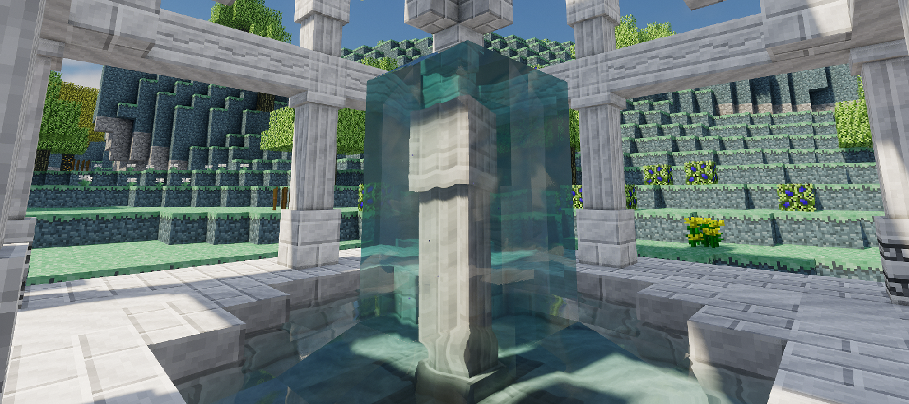
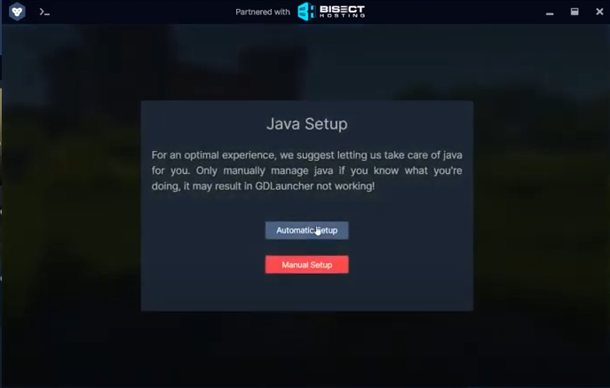
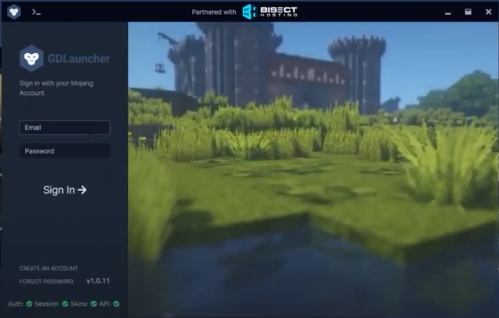
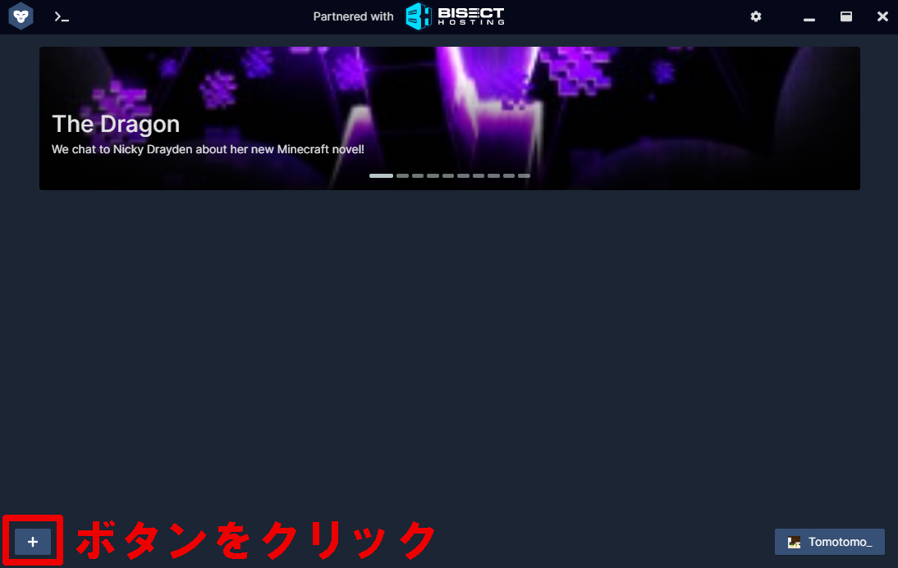
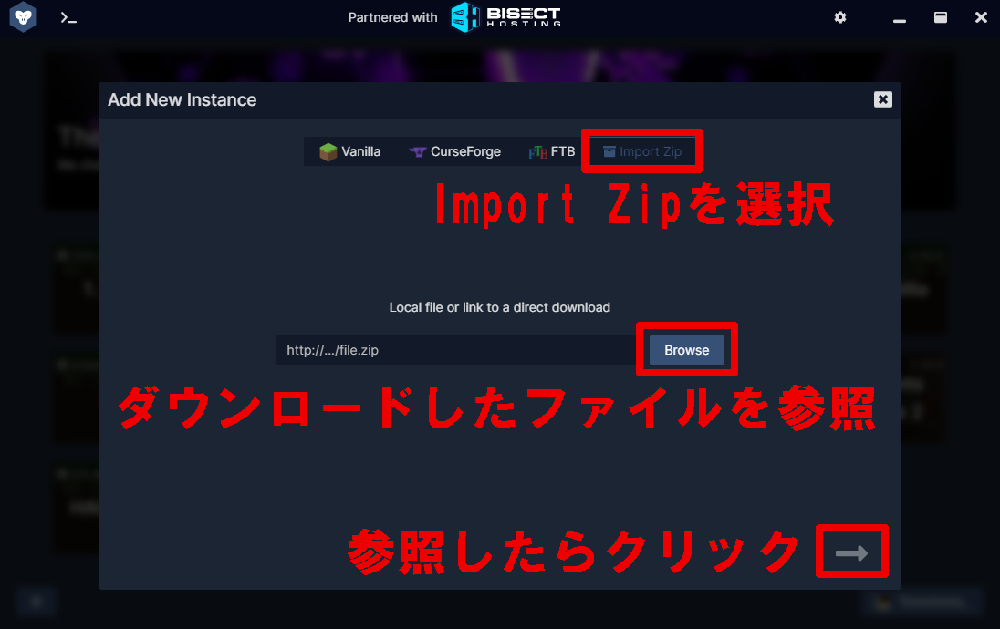

参加方法
1.Discordへの参加
- 当サーバーでは参加者のほとんどがDiscordに参加しています。
- 参加することで当サーバーでの経済活動やイベント、MOD攻略をより楽しく遊ぶことができます。
- 通話の強要は一切ありませんのでご安心下さい。
- また、これ以降でわからないことがあったらDiscordまたはお問い合わせフォームで質問して下さい。
2.Java(64ビット)のインストール
- 当サーバーで使用しているランチャーにはJavaの64ビットが要求されています。
- 既にお使いのPCにインストールされている場合は次の手順へ進んで下さい。
- 下のリンクからお使いのPCのOSのものをダウンロードして下さい。
Windows版
MAC OS/Linux版
- ダウンロードが終わったらダウンロードしたファイルを開いてインストールして下さい。
3.GDLauncherのダウンロード
- 当サーバーではmodpackの導入に適したGDLauncerをmodの導入に採用しております。
- mod構成ごとにMinecraftのインスタンスを作成しているため、他のmod環境で遊ぶ時に再導入の必要がありません。
- 推奨されていませんが、こちらから通常の導入方法でも導入いただけます。(更新の対応が遅れる場合があります)
- 下のボタンからGDLauncherをダウンロードして下さい。
4.GDLauncherのインストール
- 1. ダウンロードしたセットアップファイルをダブルクリックして開く。
- 2. Javaの構成についての設定を選択させられるので、"Automatic Setup"を選択。(後からでも設定できるのでご安心下さい) 
- 3. Minecraftのログイン情報を入力し、GDLauncherにログイン。 
- 4. こちらからmodpackをダウンロード、中の"Muscari_S10_r-.x.x.zip"を別のフォルダに取り出す。
- 5. 左下の「+」ボタンをクリック。 
- 6. "Inport Zip"を選択し、取り出したたzipファイルを解凍せずに参照。
- 7. 右下の「→」ボタンをクリックする。 
- 起動に時間がかかる or 起動しても重い場合はこちら